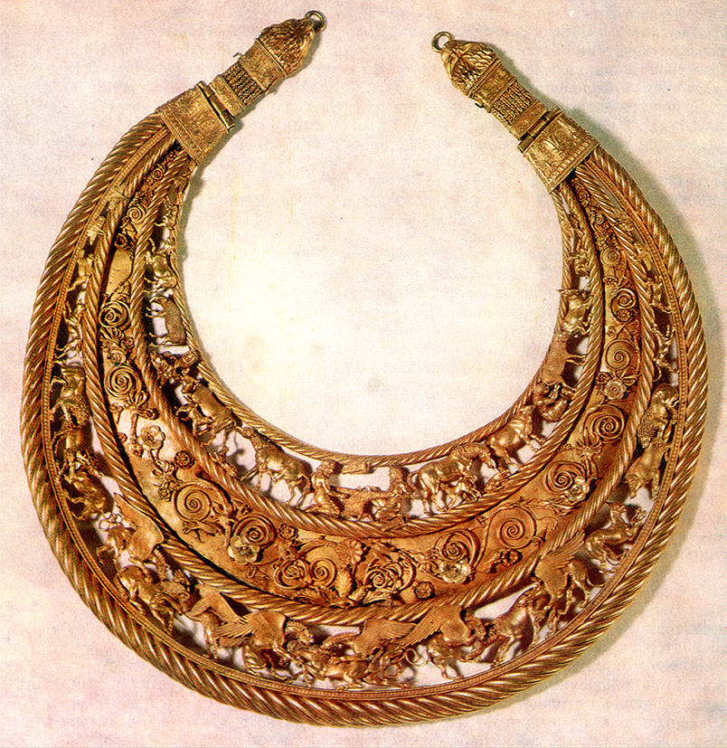
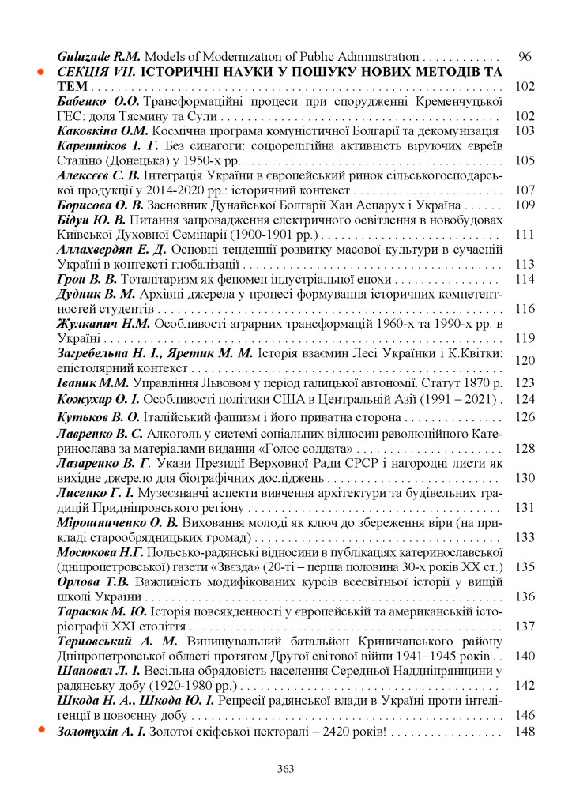
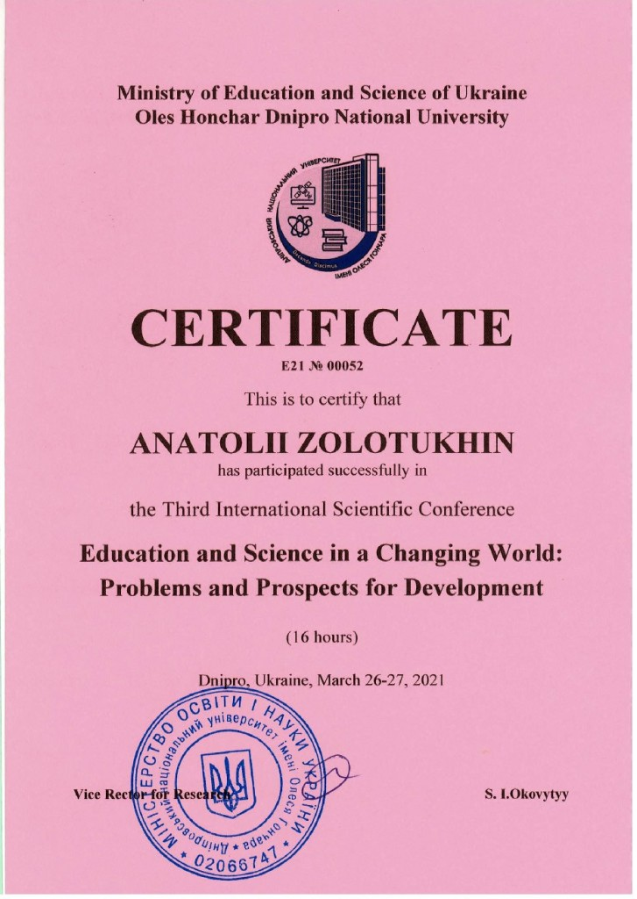

In 2021, by a surprising coincidence, we have to celebrate quite a few anniversaries associated with the creation and discovery of the golden Scythian pectoral: 85 years ago, on February 4, 1936, in the village. Nikolaevka, the Veselinovsky area, the Mykolayiv area, the archeologist and poet BM was born. Mozolevsky, who 50 years ago, on June 21, 1971, found a golden Scythian pectoral in the mound Tovsta Mohyla. September 3, 2021, marks the 2420th anniversary of the creation of the golden Scythian pectoral in Olbia-2 (village of Porutyne) in the house of Homer by his descendant, the Scythian king Trophimus Midas (8.10.470 -30. 10.369)! And September 3, 2021, will mark 2450 years since the birth of Atheus (03.09.429-8.10.339), son of Trofim Midas, 30 years to which his father dedicated the creation of the pectoral. [4c, 4d]
20 years ago, in the first publications on the Scythian pectoral, in the books “Homer. Immanent Biography “, 2001 [1], and” Exampey “, 2005 [2], the identification of the portrait of Homer on the pectoral with the portrait on the coin of an unknown author (It is now clear that it was made by Hephaestus before 63 Homer) [4f]). The portrait of Athey was identified by M.V. Rusyaeva in 1992 with the image on the coin of Eminak. [4e] In 2018 in the book “Ukraine – the soul and heart of Europe!” and in the article [3, 4a], a broader semantic-semiotic analysis of the plot content was given and two assumptions were made. The first is that Athey could have been a descendant of Homer in the 7th generation. The second is that in the centre of the pectoral is a golden fleece, 300 of which could be dedicated to the pectoral on September 3, 346 BC. This date was placed on the cover of the book. Scientifically, this is a mistake, not a mistake, because in the then deciphered 1,500 lapidary inscriptions, there was no mention of either Trofim Midas or Athey. Now, in 10 years, the decipherment of 2,270 lapidary inscriptions on solid media, found not in Greece but in the Northern Black Sea region, has been completed, in which 88 autographs of Trofim Midas, 34 of his brother Sextus Empiricus and 42 of Athey have already been found.
The pedigree from Homer to Athey (years BC) is established: Homer (14.09. 657-28.07.581) – Anacharsis (8.09.620-11.09.513) – Nikon (3.09.555-8.10.475) – Apollonidus of Nykiy (8.09.511-28.07.411) – Trofim Midas – Atey. As we can see, Athey was a descendant of Homer in the 5th generation, not in the 7th, as I had previously assumed. This is because the average age of life in this line of names of the leaders of Olbia-2 is 92 years, and for its Cimmerian kings of the genus Targitay there is such an almost happy life, up to 600 years of existence of Olbia-2. The oligarch Aristeas Prokonnesky (11.02.734-25.08.640), on whose money the new city was built, not for nothing asked Cleopatra and Homer to keep for the new city the old name of Olbia-1 (Mykolayiv), where his parents Targitay and Spheno were born, he, Homer and other descendants of their genus. [3]
It should be noted that in all Black Sea cities of Scythia democracy prevailed, the cities were governed by a council of 7-9 noble members elected by the citizens, and its chairman. It is clear that the family is not without a freak, when such Scythian murderers as Pan (4.04.674-13.05.611) or Savliy (23.05.608-8. 10.551) came to power, in the cities they ruled, tyranny was temporarily established. Anacharsis, for example, ruled for some time Olbia-2 and Chersonesos, which he founded on October 4, 575 BC. After his death, the leadership in Chersonesos passed to his daughter Cleobulina-2 (8.10.565- 8.10. 485), and after her assassination in Chersonesos in 80, Apollonidus of Nikiy, the father of Trophimus Midas, was elected leader. There has never been slavery in Greece. Here is what Apollonidus of Nikiy wrote on September 8, 427 BC. in the hidden verses at the end of the 9th book of Herodotus’s History, which he completed in the city of Nikiy (Berezan’ Island): “It is better to be a free sower in Scythia than a slave in Athens.” Therefore, in the Cimmerian family, Targitay Christianity was organically born as an accompaniment to the development of antiquity.
Here is a prayer from the future, created by Apollonidus of Nikiy on September 8, 426 BC. as early as 422 (!) before the appearance of Jesus Christ, who was a descendant of Apollonidus, Trophimus Midas and Athey. A stone with the inscription of this prayer found on the beach in 1868 near Hermonassa (Taman’):
“Lord, have mercy on Your servant Apollonidus of Nikiy and his companion Cyrus with our 7 children! Save me and remember all together with the Saints on the 55th day, in the year 350 (September 8, 426 BC), and do not condemn in anger! Be my only companion, forgive the sins of your servant Apollonid! The comet’s tail (Halley – A.Z.) enveloped the Earth in 85 d. in 50 d. 347 yr. Even he is both 3 years old and I 85 years old are children of the Grape berry born. in 37 d. 2 yr. (Cleobulin-1, daughter of Zoroaster and wife of Targitay – A.Z.) from Hades the Lamb! Apollonius of Nikiy 85 in 55 d. 350 yr. “. [4c, 4d]
Mentioned here is the wife of Apollonid and the mother of Trophimus Midas, Cyrus, known to modern historians as Dynamia. It is established that she was the daughter of 2 of the 8 children of Mithridates Evpator (3.09.571-28.07.472) and Cleobulin-2: 3rd daughter of Valentina (28.10.525-28.10.425) and their 5th son Argot (14.09.521- 8.10.430). It should be noted that Cleobulin-2 gave birth to all sons at 61 days of the birth of Homer (September 14), and daughters – at 105 days (October 28) of the birth of Cleopatra. In the 4th book of Herodotus’s History, written by Cleobulin-2, she described in detail how her youngest son Argot killed his second son of Scyll (14. 09.542 – 8.10.496). Argot was the 8th child of this couple (still alive!), So the mother did not call Argot by her name, but by Octamasad.
So far it is known that Trophimus Midas and his wife, the Greek Anna-1, had two children: the eldest of the Cross (28.10.436-28.07. 411) and the younger Athey. Cross was a golden beauty (red or blonde), a busty, playful favourite of parents and residents of Olbia-2. Trofim Midas gave her to his younger brother Sextus Empiricus (20.08. 466-30.10.369). In one of the inscriptions, Trofim Midas mentioned how on the 14th of the Cross she made the leader of the Olbia-2 Apollonid choir laugh with her mouth closed as a medicine against singing. Probably since then, they have fallen in love with each other and Kira noticed this and decided to take revenge on them both. In the 13th century, exactly 170 years after Homer’s death, this date may not have been chosen by chance. According to Trofim, she took Sextus Empiricus with her and they sailed on a ship to the temple of Demeter (Mykolayiv). Halfway through, she jumped into Olbia-2 at night, found them in her own house, and killed them both on July 28, 411 BC.
Proof of the depth of Trofim Midas’s experience is that of his 88 autographs created during his long 101 years of life, 26 were created a few months (!) After this tragedy, in which he lost his beloved 24-year-old daughter Christ, almost 100 years old. father and morally – mother and it can not help but impress. The contents of these inscriptions show that he was looking for answers to where this punishment came from and what should be done to protect his son Athey?
Trophimus Midas was born exactly in 977 after the death of Atlantis and in the same ship for their family 85 days (October 8) of her death and under the sign of the arrival of Comet Halley. It should be noted that antiquity and Christianity were born as atonement for the sins of her descendants, for whom Atlantis was ordered. Homer under the pseudonym of Plato in “Dialogues” wrote that Atlantis was punished for violating the commandments of God, written by Poseidon in Atlantis on the Arychal chalkboard, the content of which differed little from the 10 commandments given to Moses in 1200 [3, 4c ] Therefore, the 85th day of the death of Atlantis in the Cimmerian chronology became for many of the Cimmerian Atlanteans a doomsday and a subconscious program of their life and death. [4g]
The existence of the 4th, 6th and 12th cycles in life and the appearance of the comet (Halley) 75 years later were already known to Aristeas, Homer, Cleopatra and Anacharsis, and they wrote about it in lapidary inscriptions as God’s punishment. This could have prompted Trofim Midas to create a pectoral in the form of a circular work depicting the cyclical history of their Cimmerian-Atlantic genus, which is marked here with a golden fleece. The idea to create this symbol of the genus came to Aristeas, when Homer’s father, Lik, was to take power in the three cities of Hades (Mykolayiv), built by his father Targitay at the same time as the founding of Rome. The oligarch gave the money and commissioned his son Hephaestus to make a golden fleece, who performed it on September 3, 646 BC. It was on this day that Athena was born to Trophimus Midas 217 years later. This coincidence could have formed the idea of the upper tier of the composition, which depicts real life. The lower tier with gryphons, described by Aristeas in his works, is dedicated to Atlantis, which perished on October 8, 1447 BC. And the middle, plant series, dedicated to Alibant (archaeological monument “Wild Garden”), depicts 546 dark years of its existence.
It was found that Trophimus Midas spent almost 12 years creating the golden Scythian pectoral. He created 2 identical specimens, one of which he presented to Athey on September 3, 399 BC. And the second sample was exhibited in Athens on the 52nd Panathenaic and was recognized on July 26, 393 BC. The sage of Greece under the pseudonym Eminak [4d, 4e]. Then he exhibited the pectoral in his homeland, in the temple of Demeter near Alibant and Olbia-1 (Mkolayiv), where it was viewed by the whole of Scythia. After that, it was exhibited in Olbia-2, where thousands, as Anacharsis wrote in his autographs, constantly came Scythians from all over for the various anniversaries of Aristeas, Homer, Cleopatra, Scythia, whose monuments were installed in the theatre.
Now about the main thing, what was for the author and what is the pectoral for us? Probably for Trophimus Midas it was a Prayer to God, named Christ (date of His birth, in Cimmerian chronology, 163 d. 773, read in the first letters in a circle of names from Homer to Athey!) For the salvation of Scythia and souls Christ, Apollonid and the life of Athey, because really only in the exact address pectoral could be a talisman! Not for nothing did the author live with his wife for 101 years, and Athey died in battle in 90 (!) And on October 8, on his father’s birthday, and 1048 later on the day of Atlantis’ death.
For us, the pectoral is a testament to our ancestors’ understanding of the greatness of their past, the anticipation of the appearance of Christ, because they called themselves by this name in inscriptions from the time of Aristeas, calling Him to themselves. And now the pedigree from Targitay to Jesus Christ has been established through the male line, which includes Homer, Anacharsis, Nikon, Apollonidus, Trophimus Midas and Athey. It is also important that the golden Scythian pectoral is a material confirmation of the existence of a highly cultured and independent state of Scythia. Moreover, we can assume that the pectoral was created at the peak of the state development of Scythia, whose power was verified by victories in the war with Darius I in 512 BC. and later, during the siege of Olbia-2 by Zopyrion in 331 BC. Interestingly, in these wars, the enemy did not understand with whom he was actually at war.
It is known that the state is a city that in Scythia was located only on the Black Sea coast and was considered a Greek colony. It is as if the Greeks (and in fact, it was Mithridates Eupator, it reads in his inscriptions) agreed with Darius I that they would arrange for him to cross the Bosphorus and the Danube, provided that he would not destroy their cities in Scythia. And then Idantirs, the grandson of Homer, led the Persians through Scythia, and Mithridates frightened by the diversion of the crossing.
Zopyrion, on the contrary, came to conquer the Scythian city of Olbia-2, and the “Scythians” on the fortress walls, in order not to fall asleep, sang songs based on poems by Homer, Sappho (Cleopatra), Anacreon (Scythian). Six months after the siege, Zopyrion, hearing that the Olviopolitans were celebrating the city’s 293rd birthday, invited his son Athey, Xanthus of Lydia (September 8, 396-September 8, 293), who ruled the city, and asked him: who built this fortress? And he says to the Greek: Aristeas of Proconnes, Sappho, Homer, Achilles and Scythian. Xanth further writes that the one who did not retreat invited the horse got on it and rode away. And the younger son of Athey, Gipsigon (15.09.390-8.10.355), caught up with him with the Scythians and killed him. Probably, the Scythians, led by the Cimmerian Gipsigon, a descendant of the Atlanteans, attacked Zopyrion day and night, defending the city of Olbia-2. From these 2 facts follows the most ancient origin of the name of Ukraine-Rus – “Rus” on the Greek basis: ῥῡσί-πολις – “rescuers, or city guards”.
These examples provide an explanation that the exclusion of Atlantis in the Crimea [3], which was led by the Cimmerian Atlanteans in alliance with the Greeks and Phoenicians, from the history of Europe did not allow Darius I, Zopyrion or scientists to understand this today. Meanwhile, Trophimus Midas recorded on the pectoral an important moment of transition from the union of the Greeks with the Cimmerians (left part with Homer), and on the right – the union of the Greeks with the Scythians. Here is an important moment of the departure of the union of the Cimmerians with the Greeks from the columns of history and the entry into it of the union of the Greeks with the Scythians. And the most important point is that this happened not due to displacement, but due to the renaming of the leading part of the Cimmerians to the royal Scythians within one Cimmerian-Atlantic family Targitay. The transition is demonstrated by the gradual narrowing of the background of the pectoral from Homer (left, Greco-Cimmerian part) in the centre to the clasp and from the second clasp to the right by expanding the background of the pectoral upper, Greco-Scythian part, to Athey.
The fact is that a year before her death, on October 28, 582 BC, Cleopatra renamed the Cimmerian Gileya with Hades into Scythia, her and Homer’s son Gil into Scythia, and the Cimmerian tribe of Targitay into royal Scythians. [3] She did this to strengthen Scythia as a state, because the country can not be ruled by one family if they are not tyrants (!) By many tribes of Scythians, Sarmatians, Sauromates. But remember that renaming does not change the genetic code, and therefore it should be assumed that Antiquity and Christianity were created by the Cimmerians-Atlanteans, descendants of Zoroaster, indigenous to our land. Idantirs won because he democratically consulted with all Scythian tribes before the war with Darius I, and later Xanthus of Lydia defeated Zopyrion not because, as modern historians write, he set slaves free, but because there was no slavery in Olbia-2 of such. After the publication of the “Odyssey” in Athens, the Athenians rebuked Homer: how could it be that King Laertes worked with his servants in the garden and had breakfast at the same table with them?!.
It is not without reason that Homer wrote in Plato’s Dialogues [3c] and on the Rosetta Stone [4c] that the Aristocracy was the best regime of government and considered Atlantis an ideal state, ruled from the time of its foundation by the just ancestral descendants of Poseidon and Cleito. Similarly, Olbia-2 and the other 13 cities on the northern Black Sea coast, headed by philosophers, ie aristocrats of the human spirit, descendants of the Targitay and Zoroaster families who adhered to moral values, can be considered Aristocratic rule. A direct proof of this is the creation of the golden Scythian pectoral by the king of Scythia, Trophimus Midas, who was an aristocrat of the human spirit and a philosopher.
List of used sources:
1. Zolotukhin A.I. Homer. Immanent biography (Abstracts). Nikolaev. VOZMOZHNOSTY KIMMERII. 2006, 116 p.
2. Zolotukhin A.I. Exampey. Nikolaev: “Possibilities of Cimmeria”, 2005, 272 p.
3. Zolotukhin A.I. “Ukraine – the soul and heart of Europe”, Mykolayiv, 2018, 444 p.
4. Zolotukhin A.I. on the “Homer and Atlantis” website:
a). Pectoral B.M. Mozolevsky, as a symbol of Scythian culture (Semiotic-semantic analysis);
b). “Atlantis – the first ship power in Europe”;
c). “Rosetta Stone as Homer’s Autograph”;
d). “Who created the golden Scythian pectoral?”;
e). “Eminak is the pseudonym of the author of the golden Scythian pectoral!”;
f). “Coin with a life portrait of Homer”;
d). “Cycles of spiritual development of European civilization”.

{kind=link}